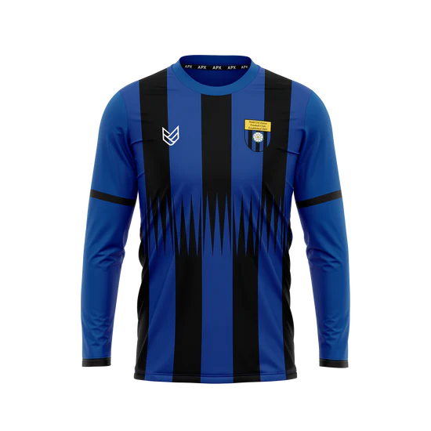

Club Shop
New Club Shop
Our kit supplier now has their own online shop that you can order direct from.
You only need to purchase a new kit if you are new to the club, your team has a new sponsor, or if last season’s kit no longer fits.

Sizing Information
To ensure the best fit, please consult our sizing chart, which you can view here: Sizing Guide.
Delivery
Orders placed with the supplier will be delivered direct to you. Delivery charges are calculated at checkout.

Before You Order
- Squad Number: You'll need to know your allocated squad number to complete your purchase. If you're unsure of your squad number, please confirm with your coach before ordering. The Squad number needs to be added to the text box labeled 'INITIALS'. For Match Kit: Do put you initials in the box, just your squad number
- Kit Size: You will also need to know the size of the kits you want to order for each player - see the sizing guide here
- Sponsored Kits: If your team is Match Kit Sponsored, you need to know your teams sponsor, and select it when ordering your match kit tops. Branding will be added to the front of your shirt.
Step 2: Order Your Match Kit
Once you've completed your registration, proceed to order your match kit by visiting the link below: